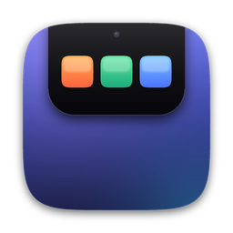

NotchDock
Turn your MacBook notch into a launcher.
把 MacBook 的刘海变成快捷启动台
Get help
Found a bug or have a feature idea? Open an issue on GitHub — we read every one.
Report an issueGetting started
- Move the pointer to the notch at the top center of the screen to open the panel. On Macs without a notch, hover over the thin line at the top center.
- Click + to add apps or websites. Drag icons to reorder them.
- Drag files onto the panel to put them on the shelf, or right-click a file in Finder › Services › Add to NotchDock.
- Click the gear button in the panel to open Settings.
FAQ
I can't find the app after installing it.
NotchDock has no Dock or menu bar icon. Move the pointer to the notch. To open Settings, open NotchDock again from Launchpad or the Applications folder.
"Add to NotchDock" doesn't appear in Finder's right-click menu.
Open NotchDock once, then enable it in System Settings › Keyboard › Keyboard Shortcuts › Services › Files and Folders.
Why do full-screen apps switch spaces when I open them?
macOS doesn't allow other apps' windows inside a full-screen space. Websites and files open in a floating window instead, so you stay where you are.
Where did my shelf files go?
The shelf is temporary and is cleared when NotchDock quits. Right-click a file › Pin to Collection to keep it.
How do I quit NotchDock?
Open Settings (gear button) and click "Quit NotchDock" at the bottom.
Privacy
NotchDock does not collect any personal data. Read the privacy policy.
获取帮助
遇到问题，或有功能建议？请在 GitHub 上提交 Issue，每一条我们都会查看。
提交问题反馈快速上手
- 把鼠标移到屏幕顶部中央的刘海处即可展开。没有刘海的 Mac，悬停在顶部中央的细线上。
- 点 ＋ 添加 App 或网页，拖动图标即可调整顺序。
- 把文件拖到面板上放入暂存区，或在访达中右键文件 › 服务 › 添加到 NotchDock。
- 点面板右上角的齿轮打开设置。
常见问题
安装后找不到 App？
NotchDock 没有程序坞图标和状态栏图标，把鼠标移到刘海即可。想打开设置，可以在启动台或“应用程序”文件夹里再次打开 NotchDock。
访达右键菜单里没有“添加到 NotchDock”？
先打开一次 NotchDock，然后在 系统设置 › 键盘 › 键盘快捷键 › 服务 › 文件和文件夹 中勾选。
全屏时打开 App 为什么会切换桌面？
macOS 不允许其他 App 的窗口出现在全屏空间中。网页和文件会以悬浮小窗打开，不会跳走。
暂存区的文件不见了？
暂存区是临时的，退出 NotchDock 后会清空。想长期保留，请右键文件 › 固定到合集。
怎么退出 NotchDock？
打开设置（齿轮按钮），点击最下方的“退出 NotchDock”。
隐私
NotchDock 不收集任何个人数据。查看隐私政策。